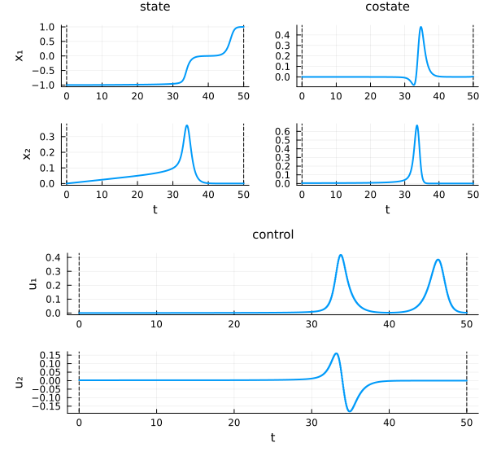
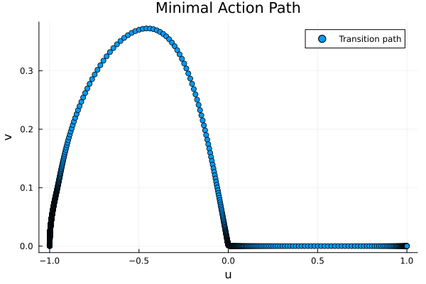
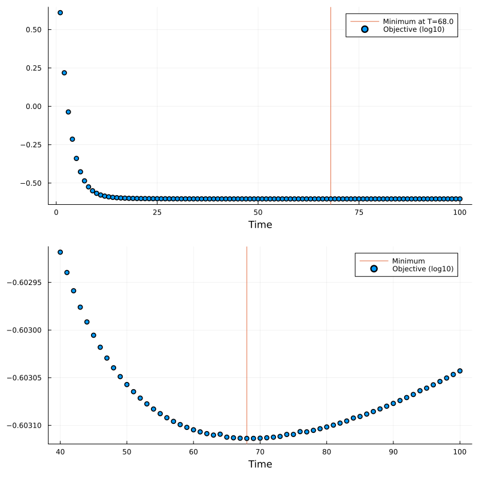

Minimal Action Method using Optimal Control
The Minimal Action Method (MAM) is a numerical technique for finding the most probable transition pathway between stable states in stochastic dynamical systems. It achieves this by minimizing an action functional that represents the path's deviation from the deterministic dynamics, effectively identifying the path of least resistance through the system's landscape.
This tutorial demonstrates how to implement MAM as an optimal control problem, using the classical Maier-Stein model as a benchmark example.
Required Packages
using OptimalControl
using NLPModelsIpopt
using Plots, PrintfProblem Statement
We aim to find the most probable transition path between two stable states of a stochastic dynamical system. For a system with deterministic dynamics $f(x)$ and small noise, the transition path minimizes the action functional:
\[S[x(\cdot), u(\cdot)] = \int_0^T \|u(t) - f(x(t))\|^2 \, dt\]
subject to the path dynamics:
\[\dot{x}(t) = u(t), \quad x(0) = x_0, \quad x(T) = x_f\]
where $x_0$ and $x_f$ are the initial and final states, and $T$ is the transition time.
The action $S$ measures the "cost" of deviating from the deterministic flow $f(x)$. Paths with smaller action are exponentially more likely in the small noise limit.
Problem Setup
We consider a 2D system with a double-well flow, called the Maier-Stein model. It is a famous benchmark problem as it exhibits non-gradient dynamics with two stable equilibrium points at $(-1,0)$ and $(1,0)$, connected by a non-trivial transition path. The system's deterministic dynamics are given by:
# Define the vector field
f(u, v) = [u - u^3 - 10*u*v^2, -(1 - u^2)*v]
f(x) = f(x...)Optimal Control Formulation
The minimal action path minimizes the deviation from the deterministic dynamics:
function ocp(T)
action = @def begin
t ∈ [0, T], time
x ∈ R², state
u ∈ R², control
x(0) == [-1, 0] # Starting point (left well)
x(T) == [1, 0] # End point (right well)
ẋ(t) == u(t) # Path dynamics
∫( sum((u(t) - f(x(t))).^2) ) → min # Minimize deviation from deterministic flow
end
return action
endInitial Guess
We provide an initial guess for the path using a simple interpolation with the @init macro:
# Time horizon
T = 50
# Helper functions for initial state guess
L(t) = -(1 - t/T) + t/T # Linear interpolation from -1 to 1
P(t) = 0.3*(-L(t)^2 + 1) # Parabolic arc (approximates saddle crossing)
init = @init ocp(T) begin
# Linear interpolation for x₁
x₁(t) := L(t)
# Parabolic guess for x₂
x₂(t) := P(t)
# Control from vector field
u(t) := f(L(t), P(t))
endThe initial guess uses a simple geometric path: linear interpolation in $x_1$ and a parabolic arc in $x_2$. This provides a reasonable starting point that avoids the unstable saddle point at the origin. The control is initialized to follow the deterministic flow along this path.
Solving the Problem
We solve the problem in two steps for better accuracy:
Starting with a coarse grid (50 points) allows for faster initial convergence. Refining with a fine grid (1000 points) then improves accuracy of the solution.
# First solve with coarse grid
sol = solve(ocp(T); init=init, grid_size=50)
# Refine solution with finer grid
sol = solve(ocp(T); init=sol, grid_size=1000)
# Objective value
objective(sol)0.24942662080398548Visualizing Results
Let's plot the solution trajectory and phase space:
plot(sol)
# Phase space plot
MLP = state(sol).(time_grid(sol))
scatter(first.(MLP), last.(MLP),
title="Minimal Action Path",
xlabel="u",
ylabel="v",
label="Transition path")
The resulting path shows the most likely transition between the two stable states given a transient time $T=50$, minimizing the action functional while respecting the system's dynamics.
Minimize with respect to T
To find the maximum likelihood path, we also need to minimize the transient time T. Hence, we perform a discrete continuation over the parameter T by solving the optimal control problem over a continuous range of final times T, using each solution to initialize the next problem.
# Continuation function to avoid global variables
function continuation_mam(Ts; init_guess=init)
objectives = Float64[]
current_sol = init_guess
println(" Time Objective Iterations")
for T in Ts
current_sol = solve(ocp(T); display=false, init=current_sol, grid_size=1000, tol=1e-8)
obj = objective(current_sol)
@printf("%6.2f %9.6e %d\n", T, obj, iterations(current_sol))
push!(objectives, obj)
end
return objectives, current_sol
end
# Perform continuation
Ts = range(1, 100, 100)
objectives, final_sol = continuation_mam(Ts) Time Objective Iterations
1.00 4.076020e+00 9
2.00 1.653530e+00 21
3.00 9.192103e-01 6
4.00 6.108596e-01 5
5.00 4.576636e-01 5
6.00 3.744821e-01 6
7.00 3.269073e-01 6
8.00 2.987667e-01 6
9.00 2.817032e-01 6
10.00 2.711311e-01 6
11.00 2.644388e-01 8
12.00 2.601047e-01 8
13.00 2.572286e-01 8
14.00 2.552711e-01 9
15.00 2.539046e-01 26
16.00 2.529270e-01 15
17.00 2.522113e-01 16
18.00 2.516759e-01 18
19.00 2.512676e-01 19
20.00 2.509506e-01 22
21.00 2.507006e-01 22
22.00 2.505006e-01 27
23.00 2.503386e-01 28
24.00 2.502058e-01 31
25.00 2.500959e-01 29
26.00 2.500040e-01 35
27.00 2.499266e-01 36
28.00 2.498608e-01 38
29.00 2.498046e-01 44
30.00 2.497562e-01 43
31.00 2.497144e-01 48
32.00 2.496780e-01 45
33.00 2.496462e-01 53
34.00 2.496183e-01 49
35.00 2.495937e-01 50
36.00 2.495719e-01 61
37.00 2.495526e-01 61
38.00 2.495354e-01 63
39.00 2.495201e-01 68
40.00 2.495064e-01 72
41.00 2.494942e-01 69
42.00 2.494832e-01 65
43.00 2.494733e-01 71
44.00 2.494644e-01 79
45.00 2.494563e-01 78
46.00 2.494491e-01 82
47.00 2.494426e-01 82
48.00 2.494367e-01 88
49.00 2.494314e-01 80
50.00 2.494266e-01 69
51.00 2.494223e-01 81
52.00 2.494184e-01 95
53.00 2.494150e-01 106
54.00 2.494119e-01 102
55.00 2.494091e-01 94
56.00 2.494066e-01 85
57.00 2.494044e-01 101
58.00 2.494025e-01 101
59.00 2.494008e-01 115
60.00 2.493993e-01 106
61.00 2.493981e-01 94
62.00 2.493970e-01 111
63.00 2.493962e-01 110
64.00 2.493967e-01 31
65.00 2.493949e-01 179
66.00 2.493945e-01 127
67.00 2.493943e-01 139
68.00 2.493942e-01 100
69.00 2.493942e-01 127
70.00 2.493943e-01 118
71.00 2.493945e-01 129
72.00 2.493949e-01 146
73.00 2.493954e-01 96
74.00 2.493965e-01 28
75.00 2.493966e-01 204
76.00 2.493982e-01 9
77.00 2.493981e-01 268
78.00 2.493990e-01 153
79.00 2.494000e-01 159
80.00 2.494010e-01 133
81.00 2.494022e-01 155
82.00 2.494034e-01 155
83.00 2.494046e-01 145
84.00 2.494064e-01 30
85.00 2.494074e-01 264
86.00 2.494088e-01 172
87.00 2.494104e-01 105
88.00 2.494119e-01 157
89.00 2.494136e-01 119
90.00 2.494152e-01 172
91.00 2.494170e-01 188
92.00 2.494188e-01 181
93.00 2.494206e-01 139
94.00 2.494229e-01 52
95.00 2.494245e-01 287
96.00 2.494264e-01 149
97.00 2.494285e-01 157
98.00 2.494306e-01 126
99.00 2.494327e-01 124
100.00 2.494348e-01 216We can now analyze the results and identify the optimal transition time:
# Find optimal time
idx_min = argmin(objectives)
T_min = Ts[idx_min]
obj_min = objectives[idx_min]
@printf("Optimal transition time: T* = %.2f\n", T_min)
@printf("Minimal action: S* = %.6e\n", obj_min)Optimal transition time: T* = 68.00
Minimal action: S* = 2.493942e-01Let us visualize the evolution of the objective function with respect to the transition time:
plt1 = scatter(Ts, log10.(objectives), xlabel="Time", label="Objective (log10)")
vline!(plt1, [T_min], label="Minimum at T=$(round(T_min, digits=1))", z_order=:back)
plt2 = scatter(Ts[40:100], log10.(objectives[40:100]), xlabel="Time", label="Objective (log10)")
vline!(plt2, [T_min], label="Minimum", z_order=:back)
plot(plt1, plt2, layout=(2,1), size=(800,800))
The optimal transition time $T^*$ balances two competing effects: shorter times require larger deviations from the deterministic flow (higher action), while longer times allow the system to follow the flow more closely. The minimum represents the most probable transition time in the small noise limit.